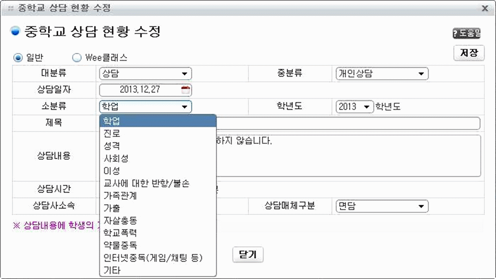
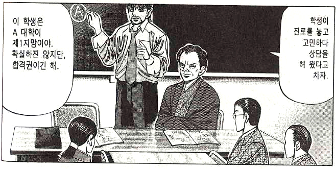
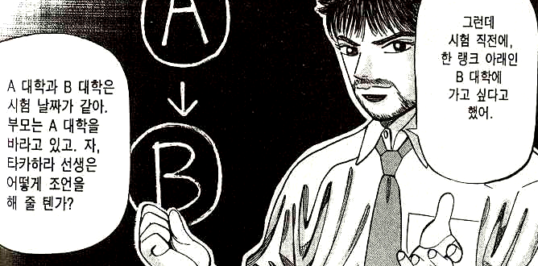
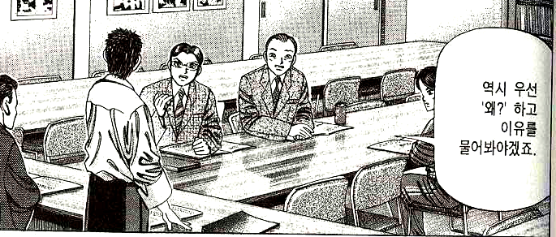
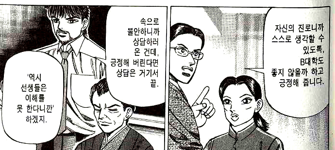
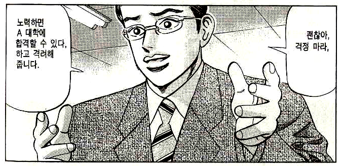
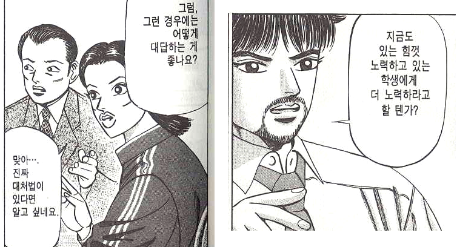
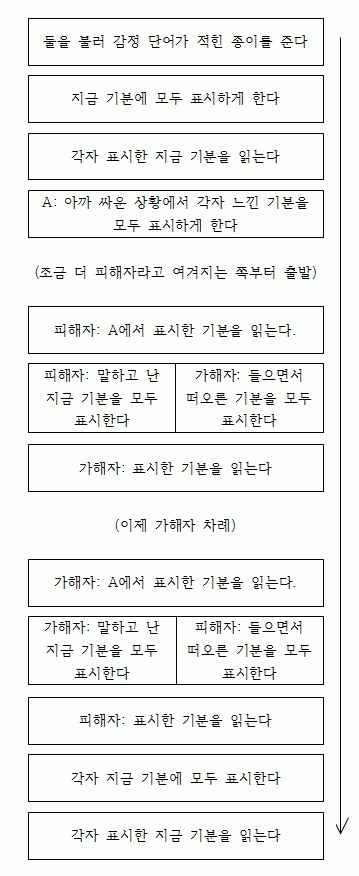

생활지도의 실제
“어두운 방에 좁은 틈으로 새어 들어오는 빛을 보라. 물체에 닿으면 격렬하게 부딪히거나 체념하여 수직으로 떨어지지 않고 그곳에 자리를 잡고 물체를 조용히 비춘다.”
- 아우렐리우스, ⟪명상록⟫
1. 생활지도에 포함된 개념
- 학생의 생활을 학교 규칙에 맞도록 변화시키기
- 학생에 대해 잘 이해하기
- 학생과의 관계를 향상시켜 수업에 도움을 받기
- 학생들 사이의 갈등을 해결하기
- 학생과 교사 자신의 갈등을 해결하기
지각하는 아이, 떠드는 아이, 담배 피는 아이, 화장하는 아이, 무단결석하는 아이, 교실 어지르는 아이, 교복 안 입는 아이, 다른 친구 괴롭히는 아이, 기물 파손하는 아이 등을 지각 안 하도록, 떠들지 않도록, 담배 피지 않도록, 화장하지 않도록, 무단결석하지 않도록, 교실을 어지르지 않도록, 교복을 입도록, 다른 친구를 안 괴롭히도록, 기물을 파손하지 않도록 변화시킬 수 있을까?
변화는 처벌에 의해서도 가능하고 칭찬에 의해서도 가능한데, 요즘은 학생을 변화시킬 만큼 강한 처벌을 할 수가 없는 시대이다. ‘칭찬’은 아무에게나 받는다고 모두 효과가 있는 것이 아니다. 학생이 ‘훌륭한 분이다.’라고 인정하여 스스로 권위를 부여한 사람이 해 주는 칭찬만이 학생의 변화를 이끈다. 결국 우리는 학생을 어떻게 규칙에 맞도록 변화시킬 것인가가 아니라 어떻게 하면 ‘나’를 학생이 인정하고 권위를 부여할 만한 사람으로 변화시킬 것인가에 대하여 연구해야 한다.
학교 규칙이라고는 해도 ‘교칙에 언급되지 않는 기본적인 규칙’과 ‘교칙에만 규정되는 특수한 규칙’과 ‘법률에 규정되는 일반적인 규칙’이 섞여 있다. ‘교칙에 규정된 것’과 ‘법률에 규정된 것’은 교칙과 법률의 규정에 따라 처리하면 된다. 다만 교칙의 일반적인 문제는 ‘이렇게 해야 한다’라고는 적혀 있지만 ‘이렇게 하지 않으면 어떻게 한다’라는 처벌 규정이 명시되어 있지 않기 때문에 규칙을 지키지 않은 경우의 대응이 교사의 재량에 맡겨진다는 점이다. (참고로, 생활지도의 기본은 " 결과 안내 중심의 훈육"이다. 그런데, 어겼을 때의 지침이 재량에 맡겨진 경우, 교사가 원칙을 정확히 세우지 않으면 "결과 안내 중심의 훈육"의 힘이 사라진다.) 그래서 ‘교칙에 언급되지 않는 기본적인 규칙’과 ‘교칙에서 처벌 규정이 명시되지 않은 규칙’은 묶어서 ‘상담’의 영역으로 넘어가고, ‘교칙에서 처벌 규정이 명시된 규칙’과 ‘법률에 규정된 일반적인 규칙’은 선도위원회나 학폭위원회 또는 검찰로 넘어간다.
2. 상담과 생활지도
‘상담’이라고 하면 몇 가지 장면이 떠오른다. 첫째, 3월에 학생들을 파악하기 위해 한 명씩 불러서 담임 선생님과 학생이 나누는 대화. 둘째, 문제 있는 학생과 교사가 문제 행동에 대하여 나누는 대화. 셋째, 학생이 고민이 있어서 교사를 찾아와서 위로나 조언을 구하는 대화. 이중 첫째와 둘째는 상담이 아니다. ‘상담’을 모욕하는 말이다. 첫째는 굳이 이름 붙이면 ‘면담’이고 둘째는 ‘취조’ 아니면 ‘훈육’ 정도가 될 것이다. 셋째의 경우가 상담이며, 전문적인 상담 기술이 필요한 주제라면 교내의 전문 상담 교사나 외부의 상담기관에 맡겨야 하고, 일반적인 주제라면 간단한 상담 대화 기술을 배워서 교사가 해결할 수 있다.
요즘은 어떤지 모르겠지만 담임을 할 때 NEIS 시스템에 상담 기록을 남기라고 하면서 이런 시스템을 만들어 준 적이 있었다. 상담의 소분류를 만든 사람이 상담을 뭐라고 생각하는지 알 수 있다.
‘상담’과 생활지도의 관계는 어떠할까? 지각하는 아이, 떠드는 아이, 담배 피는 아이, 화장하는 아이, 무단결석하는 아이, 교실 어지르는 아이, 교복 안 입는 아이, 다른 친구 괴롭히는 아이, 기물 파손하는 아이를 ‘상담’을 통해 변화시킬 수 있을까? 애초에 질문이 틀렸다. 상담은 상대를 변화시키기 위한 대화법이 아니다. 상담은 오직 ‘상대를 이해하기 위한’ 대화일 따름이다. 이러한 상담의 정의가 앞의 셋째, ‘학생이 고민이 있어서 교사를 찾아와서 위로나 조언을 구하는 대화’에 적용될 수 있을까? 교사는 조언을 구하며 고민하는 학생에게 조언을 줄 수 있다. 하지만 그보다 더 중요한 것은 학생의 고민을 ‘이해’하는 것이다. 학생의 고민을 어느 수준까지 이해하는가에 따라 위로와 조언의 영향력이 커지기도 하고 작아지기도 한다.
‘학생을 이해’하는 것은 상담에서도 중요하지만 ‘3월에 학생들을 파악하기 위해 한 명씩 불러서 담임 선생님과 학생이 대화를 나눌 때’에도 중요하고, ‘문제 있는 학생과 교사가 문제 행동에 대하여 나누는 대화’ 즉, 앞에 나왔던 ‘교칙에 언급되지 않는 기본적인 규칙’과 ‘교칙에서 처벌 규정이 명시되지 않은 규칙’을 어긴 학생과의 대화, ‘교칙에서 처벌 규정이 명시된 규칙’과 ‘법률에 규정된 일반적인 규칙’을 어긴 학생과의 대화에서도 중요하다.
생활지도의 출발점을 ‘학생의 이해’로 잡으면 여러 가지 장점이 있는데, 첫째, 학생이 ‘이해 받는다’는 기분이 들어서 마음이 열린다. 그러면 저절로 교사의 말을 잘 듣게 된다. 학생이 자신의 결심을 지속적으로 실천하는 것과는 조금 다른 문제이다. 둘째, 학생을 진심으로 이해하게 되면, 교사는 학생에게 외부의 규칙을 일방적으로 강요하지 않게 된다. ‘지각했다’라는 현상과 ‘지각하면 안 된다’는 규칙만 존재하는 이분법적 사고에서는 교사도 길을 잃기 쉽다. 학생을 제대로 이해하고 나면 ‘지각했다’라는 현상에 얽매이지 않고 다른 방식으로 학생의 성장을 도울 길을 찾게 된다.
‘학생을 이해’하기 위해, "힘들어요." 하는 학생에게 "왜 힘드니?"라고 묻는 것은 적절하지 않다. "불안해요." 하는 학생에게 "왜 불안하니?"라고 묻는 것도 적절하지 않다. 아래 영상의 '불안해 하는 사람' 표정을 보자. 불안해 하는 사람에게 말 거는 옆 사람의 대응이 적절해 보이는지?
‘학생을 이해’하기 위해 기초적인 수준의 상담 대화 기술을 응용하면 큰 도움이 된다. 마음으로 학생을 이해한다고 해도 "대화 기술"이 부족하면 한계에 부딪힌다. 아래 만화를 보자.(오른쪽부터 왼쪽으로 읽음)






생활지도에 유용한 기초적인 상담 수준의 대화를 배우고 싶다면 이 아래를 마저 읽으면 된다.
3. 생활지도와 교과 수업
비담임은 학생과 교과 수업 시간에만 만난다. 교과 수업 시간에 학생들과의 관계를 형성해 가면서 수업도 진행해 나가려면 오랜 숙련의 시간이 필요하다. 학생들과의 접촉 시간이 짧아 레포를 형성하기 어려운데, 학문의 길은 원래 어렵고 지루하기 마련이라 학생들이 고된 시간을 견뎌야 하지만 요즘 학생들은 점점 앉아 있기 힘들어 하고, 교사는 ‘수업 내용을 제대로 전달’하는 데에만 모든 힘을 쏟아도 모자랄 판에 ‘앉아 있기 힘들어 하는 학생들을 앉아서 듣게 만드는’ 데에도 많은 힘을 들여야 하므로 정해진 수업 시간 내에 둘 중 한 쪽에 무게중심이 쏠리게 마련이다. 어느 한 쪽에 더 많이 신경을 쓰다 보면 다른 한 쪽이 미진해지고, 그 미진함은 수업을 마치고 교실을 나오는 교사의 마음에 허전함과 무력감을 남긴다.
비담임 교사는 수업이 아닌 시간에 학생들과 접촉할 기회가 자주 있다. 그럴 때 ‘상담 대화 기술’을 이용해서 학생을 이해하는 노력을 해 두면, 교사에게 이해 받았다는 기분을 느낀 학생들은 수업 시간에 ‘어렵고 지루한’ 시간을 참고 견디려는 노력을 조금 더 하게 된다. 그것도 자발적으로. 그리고 그 학급의 모든 학생이 교사와 서로 이해하는 관계를 맺지 않더라도 참고 견디는 학생들의 수를 한 명씩 한 명씩 늘려나가는 것은 그 학급이라는 ‘집단’에 영향을 주게 된다. 이것이 집단 리더십의 메커니즘이다. 완벽한 목표를 세우지 말고 차근차근 작은 목표부터 해결해 나가면 된다. 그럴 때 그 실천을 포기하지 않게 만드는 힘은 믿음이다. 학생 개인과 서로 이해하는 관계 맺기, 학급의 일부 관계를 조금씩 늘려감으로써 학급 전체에 대한 교사의 영향력을 키워가는 일이 실제로 가능함을 믿어야 한다. 그 믿음은 작은 실천을 통한 성공의 경험에서 온다.
우선 다음을 실천하는 일에서 시작해 보자.
- 사실 듣기: 학생의 말을 그대로 따라 말해준다.
- “네 말은 ~라는 말이구나.”
- 기분 듣기: 말 속에 담긴 기분을 알아차려 대신 말해준다.
- “그랬다면 너는 ~, ~, ~이런 기분이겠구나.”
- 본심 듣기: 학생의 말 속에 담긴 본심을 알아차려 대신 말해준다.
- “네가 진짜로 원하는 것은 ~라는 말이지?”
(1) 다음에 (2)를 하는데, (2)를 3회 정도 반복한다. 3회는 최소한의 기준이며, 학생이 “네.”하고 나서 “네. 근데요~.”라고 말을 덧붙인다면, (1)과 (2)를 무한 반복한다. 드디어 학생이 “네.”라고 말을 하고 더 이상 아무 말도 하지 않을 때 (3)으로 넘어간다.
이것은 일상 생활 속에서 누구에게나 활용이 가능하며, 어떤 대화라도 성공적으로 이끄는 거의 유일한 대화 기술이다. 성공이라 함은 대화를 마친 후에 긍정적인 기분이 들고, 서로에 대한 이해가 깊어지고, 욕구가 충족되는 것이다.
사람들은 타인에게 말을 걸 때 자신이 미처 인식하지 못하는 경우에라도 반드시 ‘욕구’를 가지고 있다. 그런데 그 ‘욕구’에 대한 패턴화된 사고방식이 있어서 어떤 ‘감정(들)’이 발생한다. 그 감정은 ‘욕구’를 ‘말’로 발화하는 데에 ‘노이즈’가 된다. ‘노이즈’는 ‘욕구’를 있는 그대로 말로 표현하지 못하도록 방해한다. 결국 감정에 의해 노이즈가 낀, 실제 발화되는 ‘말’은 ‘욕구’의 왜곡된 형태가 되고 만다.
“느 집엔 이거 없지?”는, “너랑 친하게 지내고 싶다.”라는 욕구를 가진 점순이가, 남들의 시선이 무서운 당시 상황에서, 그 욕구에 대하여 ‘눈치보이고’, ‘조심스럽고’, ‘위축되고’, ‘조바심나고’, ‘쑥스럽고’, ‘민망하고’, ‘간절하고’, ‘수줍고’, ‘기대되고’ 등의 감정이 느껴지는 바람에 왜곡되어 튀어나온 말인 것이다. “느 집엔 이거 없지?”라는 말을 듣고, 그 ‘말’ 때문에 발끈하기 전에, 그 말을 하게 만든 점순이의 ‘욕구’에 대하여 ‘이해’하려는 태도가 필요하다.
만약 ‘나’가 교사이고 ‘점순이’가 학생이라면 이런 대화가 가능하다.
|
학생: 선생님, 저 독서 경진 대회 안 나가면 안 돼요? |
위의 사례에서 학생이 “독서 경진 대회 안 나가면 안 돼요?”라고 물은 것은 ‘말’일뿐, 그 학생의 ‘욕구’ 즉, ‘본심’이 아니다. (1) 사실 듣기 와 (2) 기분 듣기 를 반복한 결과 학생은 감정의 노이즈가 모두 걷히고 “독서 경진 대회용 도서 목록을 한 장 받아 가고 싶다.”라는 본심에 도달한다. 왜 처음부터 “도서 목록 한 장만 더 주세요.”라고 욕구를 곧바로 말하지 못하는가? 교사가 준 종이를 잃어버렸다고 혼날까봐 ‘무서움’, ‘두려움’, ‘불안함’ 등이 본심을 왜곡하는 감정적인 요인이 되기 때문이다.
(1) 사실 듣기 와 (2) 기분 듣기를 제대로 해 주면 (3) 본심 듣기는 교사가 굳이 말로 해주지 않아도 되는 경우가 많다. 감정적으로 편안한 상태가 되면 학생은 자신의 본심을 있는 그대로 볼 수 있게 되기 때문이다. 감정적으로 편안한 상태가 되면 학생은 분별력을 차리고 가장 최선의 판단을 이성적으로 내릴 수 있게 된다.
|
학생: 쌤 스승의 날에 몇 시에 끝나요? |
위는 문자 메시지 대화이다. 학생이 스승의 날 마치는 시간이 궁금해서 문자 보낸 게 아니다. 본심은 문과, 이과 결심에 대한 조언을 얻고 싶은데 그걸 갑자기 문자 보내서 “선생님 저 문과 갈까요, 이과 갈까요?” 하기에는 좀 민망하고, 죄송스럽고, 미안하고 해서 첫 마디를 저렇게 꺼낸 것이다. 그리고 교사가 (1) 사실 듣기와 (2) 기분 듣기를 반복하는 사이 학생은 스스로 결단을 내리게 된다.
위 영상 속의 아이도 "(1) 사실 듣기와 (2) 기분 듣기를 제대로 해 주면 아래와 같이 정상적인 반응을 보인다.
(1) 사실 듣기도 중요하지만 가장 중요한 것은 (2) 기분 듣기이다. 학생의 본심/욕구로 도달하는 길을 찾는 열쇠가 바로 ‘감정/기분’이기 때문이다. 청소년의 뇌를 ‘파충류의 뇌’라고 하면서 청소년의 심리를 이해하려는 정신과 의사들의 강연이나 책을 볼 수 있는데, 파충류의 뇌를 가진 청소년을 영장류의 뇌를 가진 청소년으로 간단히 바꿀 수 있다. 다음 예를 보자.
|
새해 맞이 목욕탕에 갔다. 살고 있는 지자체에서 제일 큰 탕이라 사람이 많이 붐볐다. 입장권을 사려 계산대 쪽으로 가자 초등학교 고학년쯤 되는 덩치 큰 여자 아이가 중년 여성 머리채를 자꾸 잡고 때린다. 엄마치고는 나이가 많아 보이지만 엄마인가보다. 하지말라고 하는 엄마 머리채를 끌고 이리저리 다닌다. 보다 못한 한 젊은 아줌마가 “아가! 이러는거 아니야! 아가!”하며 둘을 떼어 놓는다. 어처구니가 없다. 엄마의 처지가 딱하다. 막장 드라마를 보는 것 같다. 계산을 막 하려는데 그 엄마가 내 어깨를 지나 계산대 직원에게 “취소해 주세요.”라고 말한다. 그 찰나에 또 딸이 엄마 머리를 채어 간다. 당황스럽고 혼란스러웠다. 잠시 망설여진다. 그 엄마를 도와야겠다 싶어 딸의 손목을 잡았다. 생각보다 힘이 세다. 나도 아귀에 힘을 더 주었다. “야! 그만해!” 하려다가, “친구가 화가 엄청 많이 났나 보네...” 라고 했다. 딸이 주춤하더니 눈물이 핑 도는 얼굴을 돌려 밖으로 나간다. 많은 사람들 앞에서 저도 할 말이 있었나 보다. ‘화났냐’는 한 마디에 무너져 눈물을 흘리는 아이도 절절매며 따라 나서는 엄마도 뭔지 모를 그 사연이 참으로 딱했다. - 김*현 선생님(충남) 제공 |
파충류의 뇌는 청소년만의 특징이 아니다. 어른이라도 격한 감정에 휩싸이면 파충류의 뇌가 된다. 파충류 같은 학부모가 얼마나 많은가. 때로는 교사 자신이 감정에 휩싸여 조절이 안 되는 경험도 하게 된다. 그런 경우에도 그 모든 것을 지배하는 것은 ‘감정/기분’이다.
아래는 청소년이 아닌, 어른에게 위의 대화 방법을 적용한 사례들이다.
|
“아들이 대학 졸업하고 취직 시험을 준비하는데 스트레스 쌓인다고 술을 먹고 오는 날이 많아요. 술을 끊어야 시험도 붙고 할 텐데 그걸 생각하면 너무 속이 상해서 나도 좋은 말이 안 나오고 잔소리처럼 하게 되고, 그러면 또 내 말 때문에 아들은 더 스트레스 받고 요즘은 나한테 마음의 문을 닫은 거 같아요. 어떻게 하면 좋지요?” 하길래 속상한 감정을 알아드리고, 아들의 ‘감정/기분’을 들어주는 말을 해 보라고 알려 드렸다. “얼마 전에 우리 아들한테 ‘니가 많이 힘들구나.’라고 말해 봤어요. 그 뒤로 별 말도 안 했는데 ‘힘들구나’ 4글자에 아들이 갑자기 변했어요. 내가 무슨 말을 해도 순하게 듣고. 다시 예전 어릴 때처럼 나한테 이야기도 많이 하고. 내가 자기 마음을 알아준다고 생각해서 그런지 아들도 마음의 문을 다시 연 거 같았어요. 전에는 무슨 말을 해도 벽에 막힌 걸 억지로 뚫고 들어가는 기분이었는데..” |
|
어머니가 치매끼가 있는데 모시고 살 형편이 안 되어 간병인을 써요. 얼마 전에 간병인을 새로 구했는데 다른 지역에 계셔서 새 간병인을 자주 만나는 것도 아니고 잘하니 못하니 참견한 적도 없는데 갑자기 전화가 왔어요. 자꾸 어머니 주변 분들이 지난 번 간병인이랑 비교한다는 거예요. 전에 그 사람은 이렇게 했는데,, 저번 사람은 이런 것도 하던데,, 간병인은 자기딴엔 최선을 다하는데 이런 소리를 자꾸 들으니까 열받아서 저한테 전화한 거라면서 전화 받자마자 막 큰소리로 흥분해서 쏘아붙이더라고요. 저는 놀라고 당황해서 뭐라고 말할까 하다가 상대의 마음을 알아줘야 된다는 게 알아차려지더라고요. 그래서 “많이 속상하고 서운하셨지요.” 했더니 갑자기 조용해지면서 한동안 말이 없다가 “아, 제가 너무 화를 냈네요. 미안합니다.” 하는 거예요. 너무 놀랍기도 하고 기쁘고 뿌듯했어요. 그리고 좋게 끊었는데 또 한참 있다가 문자도 왔어요 아까는 정말 미안했다면서.. |
4. 학생들 사이의 갈등 해결
- 학생의 생활을 학교 규칙에 맞도록 변화시키기
- 학생에 대해 잘 이해하기
- 학생과의 관계를 향상시켜 수업에 도움을 받기
- 학생들 사이의 갈등을 해결하기
- 학생과 교사 자신의 갈등을 해결하기
(1) 사실 듣기, (2) 기분 듣기, (3) 본심 듣기 의 원리를 이용하면 학생들 사이의 갈등을 해결하는 데에 도움이 된다. 갈등으로 감정이 격해진 학생들이 서로 가장 중요한 (2) 기분 듣기를 할 수 있도록 교사가 기회를 만들어주기만 하면 된다. 1:1로 다툰 경우, 다음 그림에 따라 진행하되, 맨 먼저 교사는 시작 전 사실 관계를 확인하고 학생들이 작업에 참여할 기분인지를 확인하고 기분을 들어주어 참여 동기를 높인다. 중간 중간 학생들의 감정을 들어준다. 마치고 학생들의 기분을 또 들어주고 교사의 감정을 표현하거나 칭찬 등을 곁들인다. 절대 시시비비를 가리지 않으며, 이 사태나 학생이 느끼는 감정에 대한 교사의 판단을 말하지 않는다.
그 다음은 그림의 순서대로 서로 감정을 표현하게 한다. 이 작업은 갈등의 당사자가 서로의 감정을 이해할 수 있게 기회를 주는 것이다. 학생들이 아무리 이상한 말을 해도 교사는 “그랬구나.”만 해 주면 된다. “아무리 그래도 네가 그러면 안 되지.”, “네가 그런 말을 하니까 쟤가 그렇지.” 이런 말을 하면 안 된다.
제일 먼저 ‘지금 기분’을 확인하는 것은, 그 확인을 통해 ‘싸울 당시’라는 과거의 경험으로 돌아가기 위해서이다. ‘지금 기분’이 해소되지 않으면 지난 일(싸울 당시)을 떠올리는 데에 큰 방해가 된다. ‘지금 기분’을 해소하기 위해서는 ‘나 스스로 그것을 알아차림’이 필요하고, 타인이 그 기분을 ‘함께 알아차려 주면’ 효과는 배가 된다.
실제 사례에서 피해자의 감정 변화는 다음과 같다.(전근 간 첫 학교에서 생활지도부장을 할 때 3월에 중3 남학생 2명이 싸운 일이다. 레포 형성 같은 건 전혀 없는 상태임.)
| ￭ 지금 기분 |
흥분되는, 눈물겨운, 후회스러운, 울고싶은, 막막한, 무거운, 얄미운, 열받는, 지겨운, 짜증스러운, 기분나쁜, 당황스러운, 어이없는, 참을 수 없는, 쪽팔리는, 무거운, 쉬고 싶은 |
| ￭ 싸울 때 기분 |
죽고싶은, 뭔가 잃은 듯한, 못마땅한, 심술나는, 원망스러운, 불만스러운, 신경질나는, 피하고 싶은, 꼴보기 싫은, 무서운, 놀라운, 멍한, 죽을 것 같은, 조마조마한, 충격적인, 답답한, 기가 막힌, 가슴아픈, 소름끼치는, 숨막히는, 쓰러질 것 같은, 미안한, 창피한, 캄캄한, 뭐가 뭔지 알수없는 |
| ￭ 표현하고 나서 기분 |
안타까운, 지겨운, 불쾌한, 혼란스러운, 그저 그런 |
| ￭ 상대의 말을 들어본 기분 |
괜찮은, 따사로운, 허탈한, 외로운, 거북스러운, 서운한, 부담스러운, 긴장되는, 미안한 |
| ￭ 다 끝나고 기분 |
씁쓸한, 큰일 날 것 같은(부모님한테 혼날까봐), 민망한, 창피한, 안심되는, 편안한 |
학생들이 감정을 표현하기 어려워 하므로 "감정 단어" 종이를 나눠 주면 편리하다.(링크: 감정 단어 목록 보기)
‘감정’에 주목하는 방법은 갈등 발생 초기에 더욱 효과적이다. 생활지도부에 학교폭력 예방교육을 할때 친구들이 놀리거나 귀찮게 하거나 괴롭힐 때, “하지 마.”라고 말하도록 가르치는 경우가 많다. 나도 “하지 마.”를 세번 말했는데 멈추지 않으면 즉시 생활지도부로 신고하면 학폭으로 접수해 주겠다는 말을 전교생들 귀에 못이 박히도록 교육했고, 일정 정도 효과를 보았다. 그러나 그 뒤에는 친구들인 놀리거나 귀찮게 하거나 괴롭힐 때, “너의 그 말/행동 때문에 나는 괴로워, 귀찮아, 힘들어, 혐오스러워, 불안해, 무서워, 짜증나, 화가 나, 억울해, 분해, 속상해, 슬퍼, ......”와 같이 감정을 표현하도록 지도했다. 효과는 이쪽이 더 컸다.
사람은, ‘한 순간’에 감정이 ‘하나만’ 느껴지는 게 아니다. ‘한 순간’에 일어난 일에 대해서 사람들은 보통 열 개 정도의 감정이 휘리릭 지나간다. 그 중에 크게 느껴지는 것은 한두 개이다. 그것마저 못 느끼는 사람도 있다. ‘가장 큰 감정’과 ‘그 옆의 작은 감정들’이 있다. 상담 대화를 해 보면, 현실 속의 학생들이 “저 선생님 미워요. 나는 너무 억울해요. 선생님이 나를 먼저 억울하게 했고 그래서 반항했는데 내가 왜 미안해요?”라고 말할 때, 우리가 “그래 저 선생님이 미웠구나. 네가 많이 억울했구나.”라고 받아주면, “사실은 미안해요.”라고 하게 되어 있다. ‘미안함’이 새로 생겨난 것도 아니고, 우리가 그 아이 마음 속에 집어 넣은 것도 아니다. 그 학생이 선생님한테 반항할 당시에 ‘미움’, ‘억울함’과 함께, ‘미안함’, 그리고 사실은 ‘두려움’ 등등이 같이 휘리릭 지나간다. 그러나 ‘억울함’, ‘미움’이 너무 커서 그 옆에 있는 작은 감정이 안 보일 뿐이다. 억울함과 미움을 풀어주고 나면 비로소 안 느껴지던 작은 감정이 느껴진다. 그 작은 감정까지 표현하고 남은 평온하고 담담한 상태에서 ‘가장 이성적이고 최선의 결정을 스스로 내리게 돕는 것’ 그게 상담이다.
“선생님 제 선택이 옳을까요? 불안해요, 걱정돼요, 무서워요.”라고 말하는 학생에게도 그 감정만 있는 것이 아니다. ‘걱정, 무서움, 불안’을 교사가 다 들어주고 나면, “정말 잘 선택하고 싶어요, 기대가 돼요.”라는 ‘기대’가 자기 마음 속에 있었다는 것을 발견하게 된다. 그러니 학생이 기분을 표현하고 나면, “그런 기분이 들었구나.”라고 들어주고, “그렇게 표현하고 나니까 지금은 좀 어때?”라고 확인한 다음, “혹시 다른 기분은 없었어?”라고 자꾸 물어봐 주는 것이 좋다.
이 방법은 일 대 일의 갈등이 아니라 일 대 다수 또는 다수 대 다수 의 경우에도 똑같이 적용된다. 가끔씩 교무실에 있어 보면 학생들끼리 갈등을 풀겠다고 내려 와서는 담임 선생님에게 “우리끼리 이야기할 시간을 좀 주세요.” 하는 경우를 본다. 절대 안 된다. 학생들은 올바른 대화법을 모르기 때문에 자기들끼리 풀게 놔 두면 또 싸운다. 교사가 동석한다 해도 ‘대화 기술’을 익히지 않은 교사라면 쉽게 중재하기 어렵다. 원리를 알면 쉽다.
|
사실: 제주도에서 전학온 여학생 ***에게 남학생 10명이 ’제주도, 돌하루방, 돌할매, 제주도 옥동자’ 등과 같이 놀리는 상황이 약 한 달간 반복되어 여학생이 화가 많이 났다. 그 사실을 알고 3월 말에 2박3일 체험학습을 갔는데 마지막날 밤 자유시간에 숙소에 반 아이들을 모두 모이게 하고 놀림받은 여학생 ***을 가운데 앉혔다.
교사: 얘한테 뭐라고 놀렸는지 한 사람씩 말해 봐라. - 사실 이쯤에서 훈훈하게 마무리 될 줄 알았습니다. 그래서 마무리 차원에서 상황을 지켜본 다른 친구들 이야기도 듣고 마치려고 하였습니다.
교사: (그 외의 아이들에게)얘들을 보고 너희는 어떤 기분이 드는지 말해줄래? - 이 때 저는 잠시 당황했고 어떻게 해결해야할 지 막막하였습니다. 그래서 우선 “내가 좀 당황스럽구나.”라고 표현하고 나자 좀 여유가 생기면서 길이 보였습니다. 누가 먼저였는지 사실을 따지면 해결책이 없을 듯하여 아까 여학생 **에게 한 것과 같은 방법으로 남학생의 기분을 들어주기로 결정하였습니다.
교사: (남학생들에게) 그 때 너희 기분이 어땠는지 말해 줄래? - 이렇게 해서 40분 정도 걸렸습니다. |
교사도 사람인지라 학생들의 수많은 부정적 감정을 듣다 보면 감정적으로 불편해진다. 이때 위의 사례처럼 “내가 좀 당황스럽구나.”라고 감정을 표현하고 해소해야 ‘이성적인 판단’을 할 수 있게 된다.
“갈등 상황에서 교사의 일방적인 지시로 가해자가 피해자에게 사과하고 끝내는 것”이 얼마나 위험한지를 알려주는 영상이 있다.[어쩌다 어른] ‘사과’라는 것이 하나의 ‘처벌’이라면, 갈등 상황에서 사과하고 끝내는 것은 가해자 중심의 해결 방법이다. 형사법의 맹점이기도 한데, 사법체계 역시 가해자 중심의 해결 방법을 쓴다. 도둑질을 하면 징역 몇 년, 사기를 치면 징역 몇 년, 강도질을 하면 징역 몇 년, 살인을 하면 징역 몇 년, 그러나 도둑놈이나 사기꾼이 아무리 감옥에 가 있어도 잃어버린 피해자의 돈은 돌아오지 않는다. 강도가 아무리 오래 감옥에 있어도 피해자의 다친 상처는 회복되지 않는다. 살인자가 무기징역을 당해도 죽은 피해자는 돌아오지 않는다. 사법체계야 어쩔 수 없다 치더라도 학교에서까지 그래서는 안 된다.
학교에서의 갈등은 피해자 중심으로 해결해야 한다. 다행히 학교 내에서 피해자의 피해는 극단적인 경우를 제외한다면, 복구가능한 재산상의 피해이거나, 심리적으로 치유 가능한 정신적인 피해인 경우가 대부분이다. 따라서 교사는 가해 학생의 처벌에 힘을 쏟는 것 이상으로 피해 학생의 정신적 상처를 회복하는 데에 모든 힘을 집중해야 한다. 그 출발점은 역시 (2) 기분 듣기 이다.
|
9월쯤에 Wee클래스 실장님이 저한테 부탁을 하나 했습니다. “ㅇ반에 민수(가명)가 친구들에게 놀림을 받아서 상처가 큰데, 선생님이 애들한테 말 좀 배려해서 하도록 지도해 주세요.” 아이들이 수업 중이나 쉬는 시간에 “조용히 안 하면 민수!”, “자리 바꾸면 민수!”, “숙제 안 해오면 민수!” 이런 식으로 안 좋은 행동에 민수 이름을 넣어서 이야기를 한다는 겁니다. 아이들에게 배려하는 말하기를 하라고 국어 시간에 일러뒀는데 효과가 있는지 없는지 민수는 점점 학교에서 무기력해지고 수업도 자주 빠지게 되었습니다. 우연인지 필연인지 10월에 갑자기 ㅇ반의 임시 담임이 되었습니다. 담임으로 책임감도 있고 해서 민수를 불러서 물어보니까 그렇게 말하는 건 좋은데 상처 받은 건 다른 부분이었습니다. 친구들끼리, “지각하면 민수.” “나 민수 아닌데? 나는 엄마 있는데?” 이렇게 말했답니다. 민수는 엄마 아빠가 다 없거든요. 결국 그날 종례 시간에 ㅇ반 아이들에게 양해를 구하고 반 전체가 2겹의 원으로 둘러앉았습니다. 민수가 있었어도 진행하려 했는데 그날도 민수는 학교를 오지 않았습니다. 종례 후 갑자기 처음 보는 대형으로 둘러앉아서 어떤 이야기를 할지 당황되고 궁금한 아이들의 기분을 “지금 좀 당황되지?” “집에 가고 싶어 조바심이 나겠구나.” 하며 들어주고는 제가 원하는 것(나의 본심: 민수를 이해하고 서로 상처주지 않는 관계를 만들어 가기)을 제 기분(나의 기분: 걱정, 괘씸, 불안, 아쉬움, 불쌍함, 안타까움, 서운함, 미안함)과 함께 알렸습니다. 아이들이 한바퀴 돌면서 지금 현재 기분을 표현하게 하고 지금 여기에 집중하게 하였고 ‘민수’를 놀리는 부분에 대해 제가 걱정되는 부분을 표현하였습니다. 아이들이 “민수도 웃던데요!”, “민수도 우리한테 ‘청소 안 하면 나!’ 이런 식으로 말해요!”, “민수한테만 그런 거 아니라 ‘학습지 안내면 진희’, ‘칠판 안 지우면 준서’ 이렇게 우리 반 아이들 다 그래요.” 이렇게 억울하다는 반응을 보였습니다. 억울한 마음을 다 들어주고(“그랬구나.” “민수도 그랬다는 말이구나.”) 아이들에게 민수의 특수한 사정을 이야기하고 “나는 엄마 있는데.”라는 말을 들은 민수의 기분을 말해 보게 시켰습니다. 아이들이 한바퀴 돌면서 슬펐을 거 같아요, 화났을 것 같아요 등등 모두 표현하였습니다. 그리고 그걸 생각해보니까 기분이 어떤지 두 바퀴 정도 돌면서 표현하게 하였습니다. 저마다 미안해요, 후회돼요 등등 표현하였고, ‘생각’이나 ‘욕구’를 표현한 아이들에게는 ‘감정’을 표현하도록 지도했습니다. 이번에는 민수한테만 안 쓰면 되는 문제가 아니다, 다른 친구들끼리 그런 표현을 쓸 때마다 민수는 자기가 들었던 말이 떠오르지 않겠느냐, 앞으로 우리 반에서 그런 표현을 아무도 안 써서 완전히 없애야 그나마 민수가 안심할 것 같다, 라고 말하고 제 생각에 동의하는지 물어보았습니다. 아이들이 동의하였고, 고맙다고 말한 뒤, 지금 소감을 기분으로 표현하게 하였습니다. 저도 마지막으로 감정을 표현하였고 대략 50분 정도 걸렸습니다. 그리고 12월 방학하는 날까지 ㅇ반에서는 “이거 안 하면 XX” 이런 표현이 단번에 없어졌고, 딱 한 번 반장이 학습지를 걷으면서 “학습지 안 내면 나..” 하다가, 저를 쳐다보더니 손을 위로 뻗으면서 “나무가 되자!” 이렇게 말을 이어붙여 아이들이 다 같이 웃었습니다. |
갈등이 크게 불거지지 않더라도 ‘이해’를 위해서 언제든지 활용 가능하다.
|
장애이해교육이 필요했다. 이 아이의 행동을 장애와 연관지어, 잘못하거나 괴롭히는 게 아니라고 이해시키는 것이 필요했다. 1. 오늘은 **이에 대해서 얘기하는 시간을 갖고 싶어. **이가 우리랑 달라서 너네가 겪은 불편함들이 있을건데, **이가 직접 그 얘기를 듣고 너희들 마음을 알아주면 시원해지고 좋을텐데, **이가 이걸 이해하기가 아직은 어려워. 그래서 선생님이 대신 너희들 이야기를 들으려고 해. 또 좋은 느낌도 말해주면 좋겠어.
2. 아이들 이야기를 시켰다. >>얘기를 들으면서 하나하나 1)감정공감, 2) 그럴 때 어떻게 했나? 듣고 화가 났지만 참았다. 뭐라고 할 수가 없었다는 말들에 참느라 힘들었겠다. 배려하려고 했구나. 참아주는 마음이 고마워. 등으로 반응 했다. 3) 본심알아주기(덜 덜어졌더라도 본심을 꼭 얘기했다. ) 4) 좀 있다가 마음이 말하기 전 보다 나아졌는지 물어서 듣기
3. **이 어머니가 적어준 **이에 대한 소개를 편지라고 말하고 읽어줬다. 읽는 도중 아이들이 아~, 그래서~. 하는 말들을 했다. 다 읽은 뒤 고개를 들어보니, 아이들이 눈이 촉촉해져 있다. “읽으면서 너네 하는 말을 들어보니까, 편지를 듣고 **이에 대해서 이해하게 된 것이 있나봐?” 모두 손을 들었다.
- 빤히 쳐다보는게 좋아서 그러는 건지 알게 됬어요. **이가 자기들을 좋아한다, 함께 놀고싶어한다는 것을 알게 되었다고 말하는 아이들이 가장 많았다.. 내가 제일 신기한 부분은... 신기하게도 아이들이 불편하다고 했던 행동을 잘 설명할 수 있는 말들이 있었고, 아이들이 그 편지 내용을 그냥 그대로 참 잘 받아줬다. - 김*영 선생님(울산) 제공 |
학교에서 발생하는 갈등은, “있어서는 안 되는 일”이 아니라, 일상 그 자체이다. 교사에게 갈등은, “골치 아픈 일”이 아니라, 학생을 이해하고, 학생들이 서로를 이해하는 좋은 기회이다. 교사가 갈등을 부담스러워하는 것은 첫째, 갈등을 해결할 역량, 기술이 부족하기 때문이다. 학생 간의 갈등이 몇 마디 말로 풀리고 학생들의 굳은 표정이 서서히 부드러워지는 경험을 몇 번만 하고 나면 나중에는 오히려 학생 간의 갈등이 발생하기를 기다리고 갈등 상황에 개입하는 것을 즐기게 된다. 다음과 같이 극단적인 갈등과 대립도 교사는 지금까지의 방법을 응용하여 해결할 수 있게 된다.
어른은 물론이고 아무리 어린 학생이라 해도 십여년 살아오면서 수많은 경험을 하고 그 경험에 대한 저마다의 해석과 느낌을 마음 속에 품은 채 지금 여기를 살아간다. 그래서 어떤 새로운 경험을 하게 되면 과거의 경험을 바탕으로 새로운 경험에 대한 평가와 판단과 해석을 하게 된다. 서로의 경험이 다르다면 같은 시간 같은 공간에서 새로운 경험을 공유했더라도 그에 대해 남는 인상은 다를 것이다. 교사가 갈등을 부담스러워하는 두번째 이유는, 학생 간의 갈등이 점차 커져서 수습하기 곤란해지거나, 갈등을 제대로 해결하지 못해 마음의 짐으로 남은 ‘과거의 경험’들이 지금 현재를 지배하기 때문이다. 교사가 (1) ~ (3)의 대화 기술을 이용해 학생간의 갈등을 중재해 주고 나면, 학생들에게는 그 경험이 어떻게 기억될까?
한 친구를 ‘나와 싸운 친구’로 인식하며 평생 사는 것과, ‘나와 화해한 친구’로 인식하며 사는 것 중 어느 쪽이 행복할까? 수험에서 실패한 일을 ‘내가 실패한 경험’으로 인식하며 사는 사람과 ‘실패했지만 좌절하지 않았던 경험’으로 인식하며 사는 사람은 어째서 달라지는가? 갈등 관리가 중요한 이유이다.
5. 학생과 교사 사이의 갈등 해결하기
‘정신적 피해’라는 것을 대할 때는 두 가지 관점이 있다. 첫째, 눈에 보이지 않지만 본인이 그렇게 느낀다면, 그것은 실제하는 피해가 된다. 피해 당사자가 느끼고 있는 불안감, 혐오감, 불쾌감, 분노, 두려움, 불만 등을 ‘그건 실체가 아니야.’, ‘그건 오해한 거야.’, ‘그런 감정은 느껴선 안 돼.’라고 부정하는 것은 그 학생을 ‘이해’하는 태도가 아니다. 그것이 사실의 왜곡이나 본인의 피해의식, 강박관념이 만들어낸 허상이라 하더라도, 우선은 “그렇구나. 너는 그렇게 느끼는구나.”에서 출발해야 ‘본심’으로 찾아가는 길로 들어설 수 있게 된다. 둘째, 정신적 피해를 극복하는 것은 자존감을 올리는 길 뿐이다. 남들이 내 험담을 해서, 남들이 째려 봐서, 남들이 나를 따돌려서, 남들이 내 말을 안 들어줘서, 남들이... 그 모든 것들이 ‘남’에 의해 유발된 부정적 감정이다. 내 감정의 주인은 ‘나’여야 한다. 남들의 반응 하나하나에 일일이 내 감정이 흔들린다면 살아갈 수가 없다. 관계의 리더가 되어야 한다는 말이다. 그것은 학생 개인의 ‘자존감’과 관계 있는 부분이다.
왕따는 물리적인 문제이기도 하지만 정신적인 문제이기도 하다. 정신적인 왕따 문제라면 아래 영상에서처럼 '자존감'만 회복하면 아무런 문제가 안 된다. 그리고 아래 영상의 좋은 점은, 물리적인 왕따는 "괴롭힘"이 아니라 "범죄"라고 알려준다는 점이다. "범죄"는 참아 넘기면 안 되고 처벌해야 한다.
그렇다고 이 영상에서처럼 학생에게 무작정 “자존감을 길러.” “친구들의 반응을 무시해.” “신경 끄면 되잖아.”라고 아무리 말해도 소용이 없다. 교사 자신이 학생의 자존감을 길러주는 대화를 해야 한다. 그것은 학생의 말을 있는 그대로 존중하는 것. 그리고 교사가 자존감이 높은 사람이 어떻게 행동하는가를 보여주는 것이다. 학생의 말을 모두 따라해주고, 학생의 감정을 섬세하게 들어주고, 학생의 말 속에 숨어 있는 이성적으로 건전한 ‘본심’을 알아봐 주는 말을 모든 학생들에게 반복적으로 해 주는 것이다. 그리고 교사 자신이, 학생들의 어떤 말에도 흔들리지 않고 올바른 대응을 하는 모습을 일상 생활에서 늘 보여줘야 된다.
|
학생들이 이렇게 말을 할 때 “아니 학생이 어떻게 이런 말을 할 수 있어?” “학생이 이렇게 말 하는데 내가 화가 안 나겠어요?” “학생이 이런 말을 하는데 듣고만 있었단 말이에요?”
학생들이 무슨 말을 하건 학생의 자유이다. 거기에 어떤 반응을 하든 그건 교사의 자유이다. 그러나 교사는 직업 윤리 때문에 ‘자유로운 반응’을 하면 안 되며 ‘교육적인 반응’을 해야 한다. 이 관계를 이해하면 어떤 인간 관계에서든 ‘리더’가 될 수 있고, 학생과 교사 사이에 발생하는 모든 갈등을 해결할 수 있다. ‘리더’란 대화를 이끄는 사람, 상대를 조종하는 사람이 아니다. 상대의 감정에 영향을 주는 사람이 ‘리더’이고, 상대의 말에 영향을 받아 감정이 흔들리는 사람이 ‘팔로워’가 된다. “네가 그렇게 말하니까 내가 화가 나지.”라고 말하면서 학생을 혼내는 교사는 지위상의 ‘리더’일 수는 있지만 감정적으로는 ‘팔로워’에 불과하다.
말을 하는 사람은 하는 자유가 있고, 듣는 사람은 듣는 사람의 자유가 있다. “교장 선생님이 부탁했는데 어떡하죠?”라고 묻는 교사가 많다. 그러면 사람들이 “아니 교장이 돼 가지고 왜 그런 부탁을 하냐?”라고 대신 화내 준다. 하지만 부탁하는 건 교장의 자유이고 그 부탁을 듣고 안 듣고는 듣는 사람의 자유이다. 학생이 쉬는 시간마다 와서 일일이 고자질을 해서 “제발 좀 이 아이를 안 내려오게 할 방법을 알려 주세요.”라고 하소연하는 교사가 있다. 내려오는 건 학생의 자유이고 그 아이를 돌려보내거나 들어주거나 하는 건 교사의 선택이다. “부장 선생님 저한테 화 좀 내지 마세요.” 화 내는 건 부장 교사의 자유이고, 그 화내는 모습에 어떻게 대응하는지는 나의 선택이다. 그렇다. ‘나’는 그 상황에서 상대의 말과 행동과 감정에 휘둘리는 종속된 존재가 아니라, 어떤 상황에서도 ‘나의 본심’, ‘나의 욕구’를 충족하는 방법을 찾아 ‘선택’할 수 있는 사람이다. 그것을 교사 자신이 먼저 믿어야 한다. 그리고 그 믿음을 실천해야 한다.
학생이 어떤 말이건 해도 된다는 사실을 “괜찮아. 무슨 말이든 해 봐.”라고 ‘말하기’로 전달하면 안 된다. 학생이 어떤 말을 하더라도 “네 말은 ~라는 말이구나.(1) 사실 듣기.”로 ‘듣기’로 반응해 주면, 학생들의 자존감이 서서히 올라간다.
|
학생이 “선생님, 솔직히 우리 반에 관심 있으세요?”라고 할 때, 교사는 가~라 중에서 하나를 고를 수 있다. 교사가 무엇을 고르는가에 따라 학생과의 대화가 '후회되는 일'로 교사에게 남기도 하고, '억울한 일을 당했다'는 기억으로 남기도 하고, '학생에 대한 안타까움과 염려스러운 일'로 기억되기도 한다. 교사가 굳이 가~라 중에서 하나를 애써 고를 필요 없이 학생의 ‘말’, ‘기분’, ‘본심’에 주목해 보자.
학생: 네. 맨날 쟤네들만 말 걸어주고 칭찬해 주잖아요. 교사: 내가 저 애들에게만 말 걸어주고 칭찬해 줬다는 말이구나. 학생: 네. 우리한테는 말도 안 걸어주고. 교사: 내가 너희한테는 말도 안 걸어줬다는 말이구나. 학생: 네. 교사: 그렇다면 정말 실망스럽고 서운하기도 하고, 속도 상하고 내가 원망스럽기도 하고, 또 저 애들에게 질투도 났겠다. 학생: 네. 교사: 그러니까 네가 진짜로 원하는 건 내가 앞으로 너희들에게 말도 걸어주고 칭찬도 해 줬으면 좋겠다는 말이지? |
진정한 듣기란 “네가 어떻게 나한테 그런 말을 할 수가 있니?” 대신 “네가 나한테 그런 말을 하다니, 무슨 일이 있었구나. 내가 들어줄게.” 라고 반응하는 것이다. 결국 학생을 ‘이해’하겠다는 태도이다. 이러한 대화의 결과는 극적으로 찾아오기도 하고 서서히 찾아오기도 한다. 배운 대로 해도 안 되더라면서 금방 본래 말투로 돌아가는 교사들이 많다. 그런 분들은 본래 말투로 학생들을 상대해도 크게 불편함이 없는 분들이다. 하지만 가끔씩이라도 불편함을 느낀다면 (1)~(3) 단계 대화를 최소 3개월 시험 삼아 일상적으로 사용해 볼 것을 권한다.
(1) 사실 듣기 “학생의 말을 그대로 따라 말해 준다.”에서 주의할 사항이 있다. EBS 다큐멘터리 "아이의 자존감"을 보면 다음과 같은 장면이 나온다.
|
4. 학생들 사이의 갈등 해결
- 학생의 생활을 학교 규칙에 맞도록 변화시키기
- 학생에 대해 잘 이해하기
- 학생과의 관계를 향상시켜 수업에 도움을 받기
- 학생들 사이의 갈등을 해결하기
- 학생과 교사 자신의 갈등을 해결하기
(1) 사실 듣기, (2) 기분 듣기, (3) 본심 듣기 의 원리를 이용하면 학생들 사이의 갈등을 해결하는 데에 도움이 된다. 갈등으로 감정이 격해진 학생들이 서로 가장 중요한 (2) 기분 듣기를 할 수 있도록 교사가 기회를 만들어주기만 하면 된다. 1:1로 다툰 경우, 교사는 시작 전 사실 관계를 확인하고 학생들이 작업에 참여할 기분인지를 확인하고 기분을 들어주어 참여 동기를 높인다. 중간 중간 학생들의 감정을 들어준다. 마치고 학생들의 기분을 또 들어주고 교사의 감정을 표현하거나 칭찬 등을 곁들인다. 절대 시시비비를 가리지 않으며, 이 사태나 학생이 느끼는 감정에 대한 교사의 판단을 말하지 않는다.
4. 학생들 사이의 갈등 해결
- 학생의 생활을 학교 규칙에 맞도록 변화시키기
- 학생에 대해 잘 이해하기
- 학생과의 관계를 향상시켜 수업에 도움을 받기
- 학생들 사이의 갈등을 해결하기
- 학생과 교사 자신의 갈등을 해결하기
(1) 사실 듣기, (2) 기분 듣기, (3) 본심 듣기 의 원리를 이용하면 학생들 사이의 갈등을 해결하는 데에 도움이 된다. 갈등으로 감정이 격해진 학생들이 서로 가장 중요한 (2) 기분 듣기를 할 수 있도록 교사가 기회를 만들어주기만 하면 된다. 1:1로 다툰 경우, 교사는 시작 전 사실 관계를 확인하고 학생들이 작업에 참여할 기분인지를 확인하고 기분을 들어주어 참여 동기를 높인다. 중간 중간 학생들의 감정을 들어준다. 마치고 학생들의 기분을 또 들어주고 교사의 감정을 표현하거나 칭찬 등을 곁들인다. 절대 시시비비를 가리지 않으며, 이 사태나 학생이 느끼는 감정에 대한 교사의 판단을 말하지 않는다.